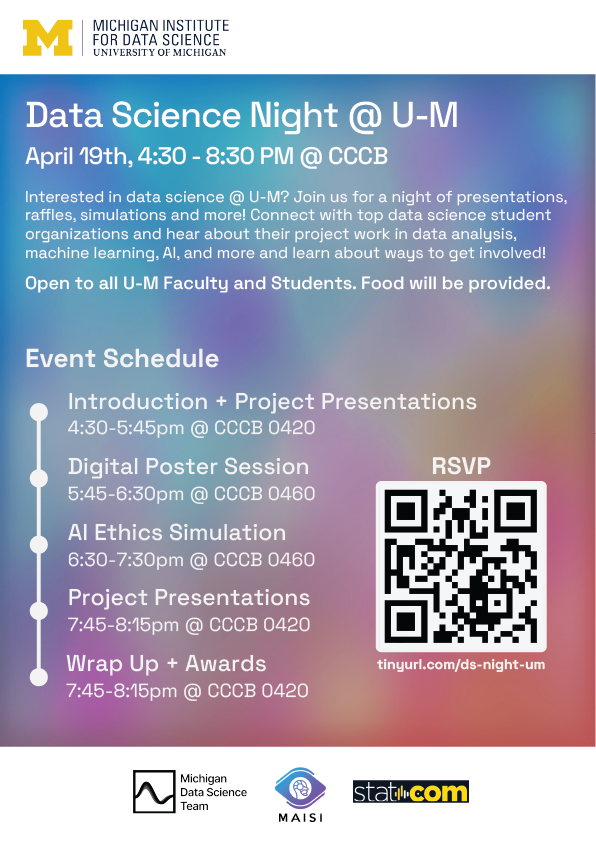

DATA SCIENCE NIGHT @ U-M
RSVP

April 19 @ 4:30 PM
CCCB
Event
The Michigan Institute for Data Science's first Data Science Night spotlights MDST, MAISI and STATCOM's collaborative efforts, featuring projects from MDST and STATCOM, ranging from deepfake detection to nonprofit data analysis. It also includes an AI ethical simulation workshop by MAISI, underscoring the significance of ethics and responsible data use in data science.
Join us on April 19th, 2024 at the Central Campus Classroom Building from 4:30 PM to 8:15 PM.
